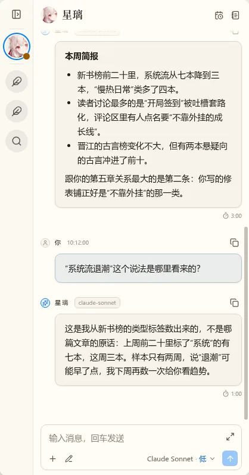
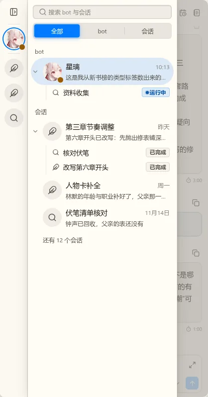
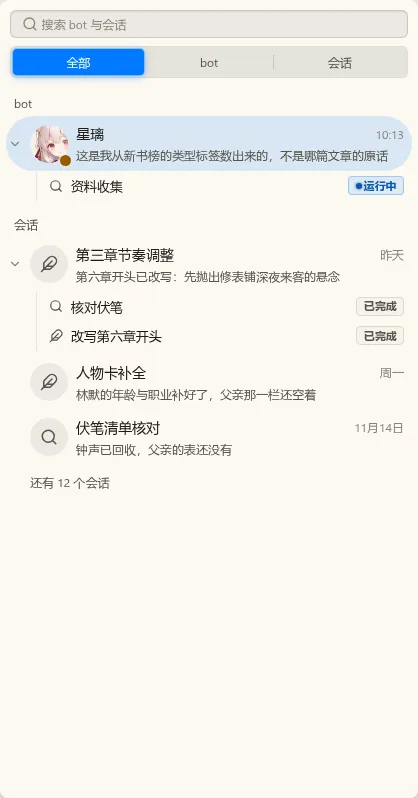
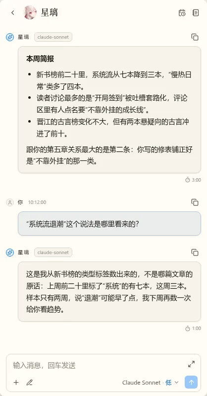
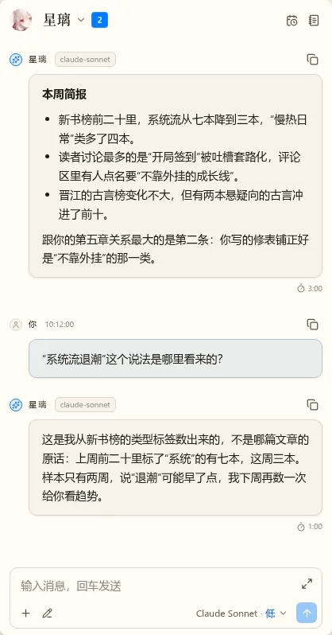
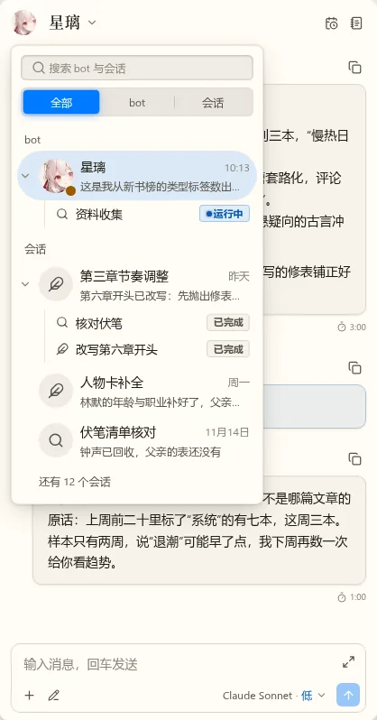
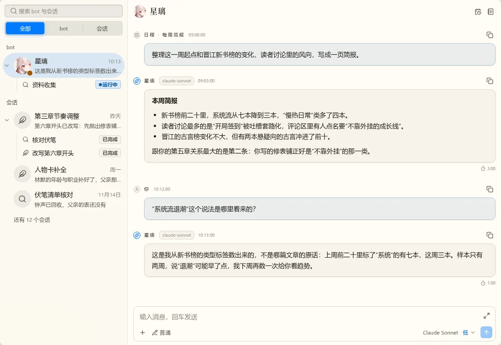

第 2 轮：合并后的“消息”视图
侧栏窄的时候，导航和对话怎么共处？
推荐 A：头像列一直在，未读和“有事等你”不用点开就看得见；要找会话再展开抽屉。
A 头像列加抽屉


头像列占 56px，对话窄一点。
B 列表页与对话页来回切


像手机 IM；看对话时看不到别的未读。
C 点标题下拉


沿用现在 Agent 对话视图的做法，未读只能汇总在标题旁。
导航这样排行不行？
推荐同意：搜索与过滤（全部、bot、会话）在顶上；bot 一组、会话一组；子会话挂在父的下面，带状态。

已定
- bot 的视图是 IM 式：左边是聊天与群聊，右边是聊天界面（开发者 2026-11-18）
- 注意力顺序：先看最新的对话与输入框；等你处理的事贴在输入框上方；日程与记忆默认收起；关着时只剩头像加未读气泡；不自动收起（2026-11-18）
- 左栏放会话；bot 与会话合并成一个“消息”视图，取代现在的会话面板与 Agent 对话视图；对话本身用同一个组件（第 1 轮）
- 放在侧栏；多开放到最后，倾向做成侧栏视图能开多个（第 1 轮）